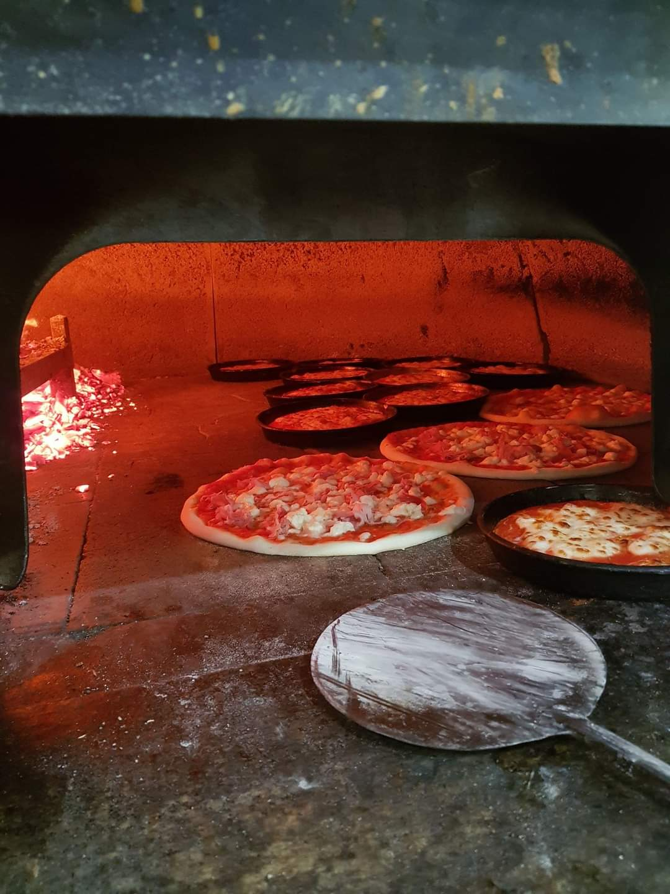
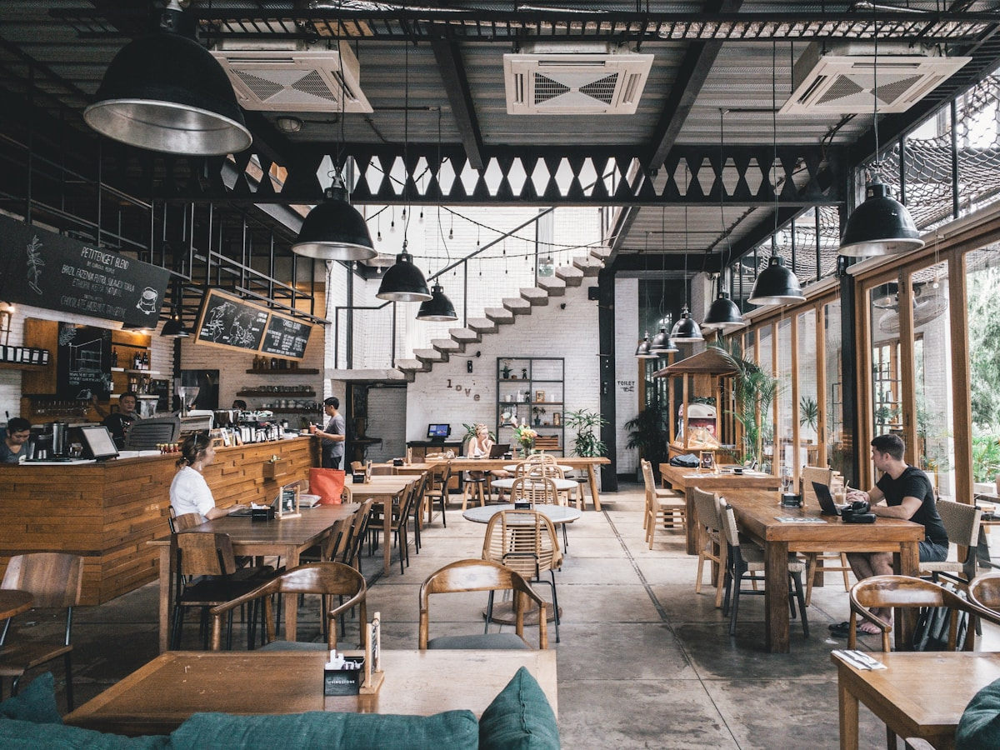
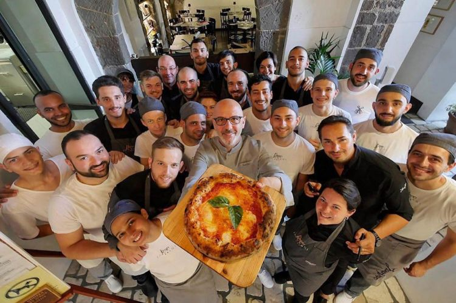
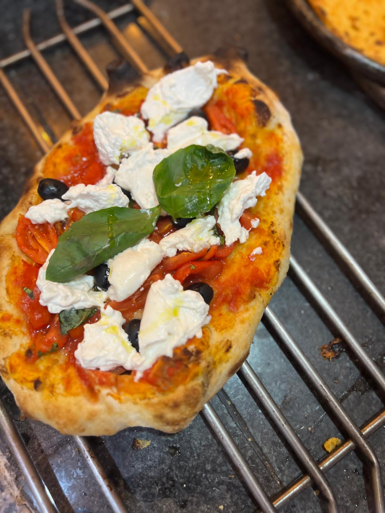
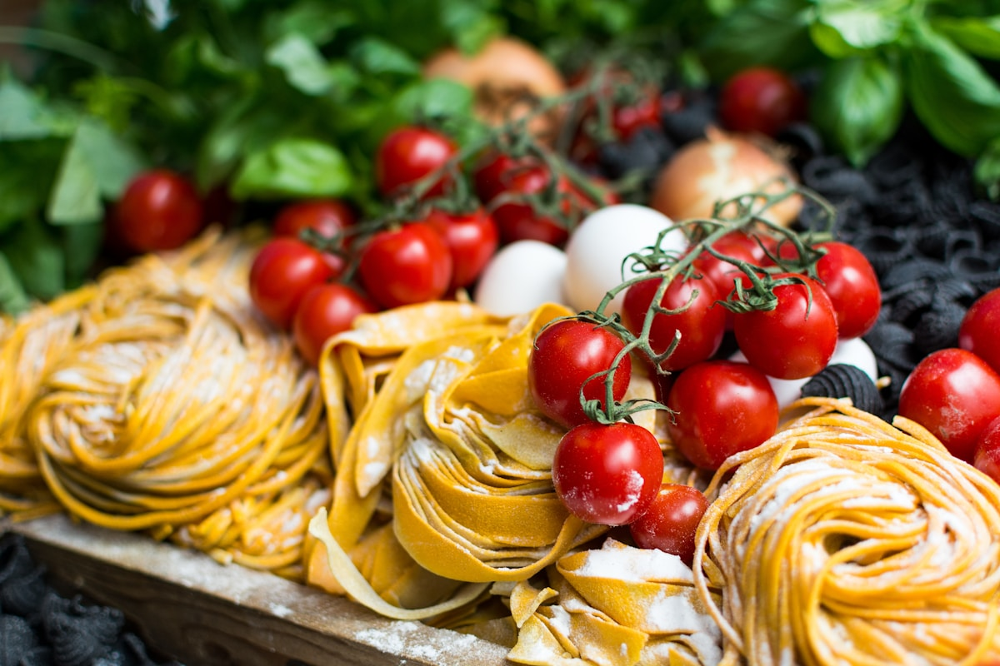
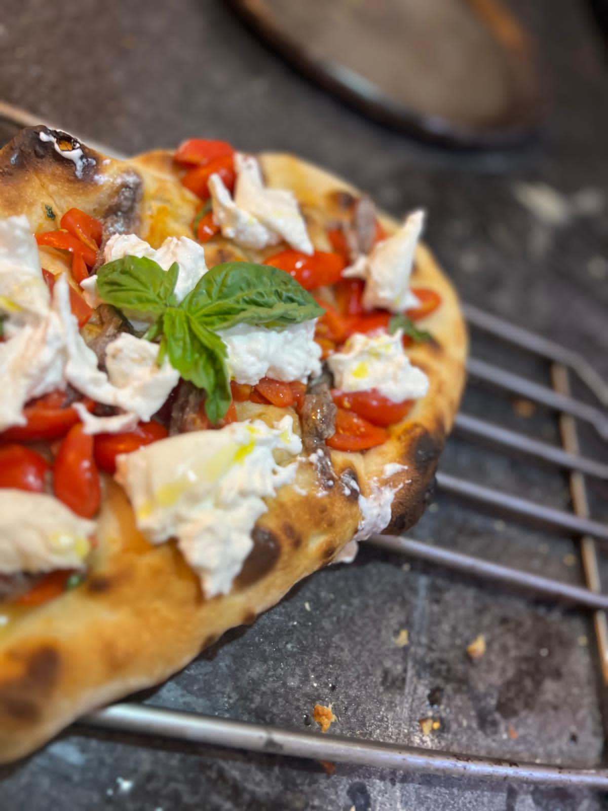

La storia di un posto che ha deciso di non restare soltanto una pizzeria di paese.
Nel 2016 abbiamo acceso per la prima volta il forno a legna di questo locale. Da allora non l'abbiamo mai spento.
Per anni abbiamo fatto due cose, e le abbiamo fatte bene: la pizza — al mattone, con quella crosta che viene solo dal forno a legna, e il tegamino alto e soffice come vuole la tradizione piemontese — e la farinata di ceci, croccante ai bordi e cremosa al cuore, cotta su teglia di rame direttamente nella fiamma. Quello era Il Brindo, e ci bastava.
Poi, negli anni, è arrivato l'American BBQ. Non per seguire una moda — ma perché il forno a legna fa cose straordinarie anche con la carne, e ci siamo accorti che valeva la pena esplorarlo. Le costine, il pulled pork, il brisket: lo stesso fuoco, una filosofia diversa.
L'ultima novità è del 2025: la pinsa romana. Impasto a lunga lievitazione, leggerissimo, con quella crosta ariosa che non assomiglia a nessun'altra cosa. Siamo arrivati tardi alla pinsa, ma quando ci siamo arrivati l'abbiamo fatta come si deve.
Siamo ancora, prima di tutto, una pizzeria. Il resto è quello che succede quando tieni il forno acceso per quasi dieci anni e non smetti di essere curioso.

Quella che ti vogliamo trasmettere ogni volta che entri.
Il forno a legna non è un vezzo estetico. È il motivo per cui la pizza ha quella crosta, la farinata quel profumo, i dolci quel calore che dura. Non abbiamo mai considerato di toglierlo.
Siamo sempre stati in piemonte e lo rivendichiamo. La farinata, il tegamino, il bonet. Il rispetto per quello che c'era prima è la base di tutto quello che facciamo.
Il BBQ non te lo aspettavi. Le pinse stagionali nemmeno. Cerchiamo di portare qualcosa di inaspettato — non per stupire, ma perché ci piace cucinare cose diverse e curarle con la stessa attenzione.





"Prendiamo il cibo sul serio.
Noi stessi, un po' meno."
Siamo una pizzeria di paese in un paese di collina, a pochi chilometri da Asti. Non cerchiamo di sembrare quello che non siamo. Cuciniamo bene, accogliamo meglio, e usiamo il forno per tutto quello che ha senso cuocere nel forno.
Castelnuovo Don Bosco (AT) — A dieci minuti da Chieri, venti da Asti.